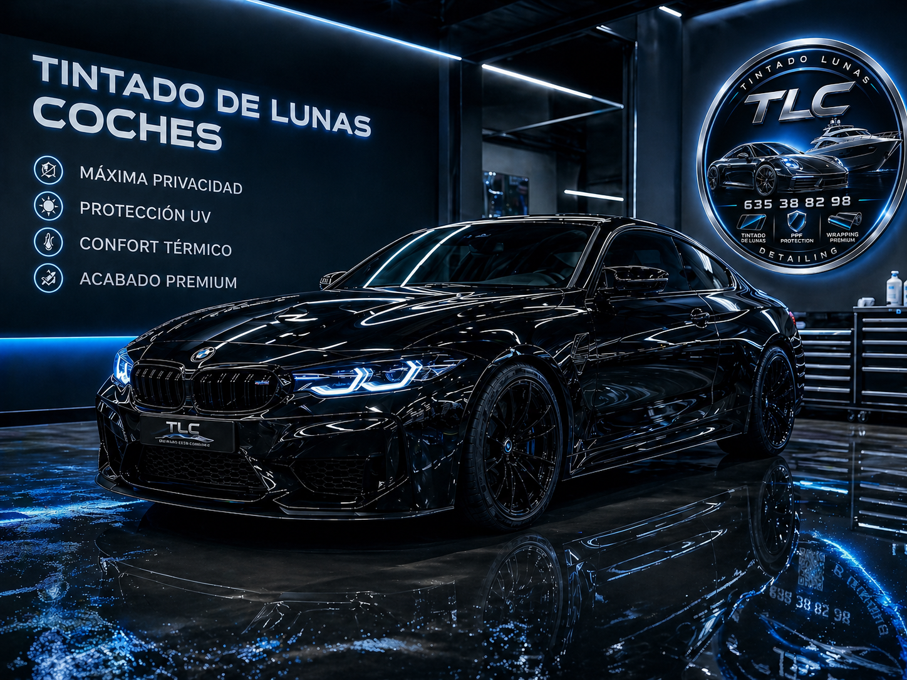
En TLC nos especializamos en detailing profesional para embarcaciones, cuidando cada detalle para conseguir un acabado premium y una protección duradera.
Trabajamos limpiezas profundas, pulidos técnicos, restauración de brillo y tratamientos de protección para pintura, interiores y superficies náuticas como el gelcoat.
Aplicamos cerámicos y ceras premium que protegen frente al sol, la suciedad, el salitre y el desgaste, aportando un acabado hidrofóbico, elegante y exclusivo.
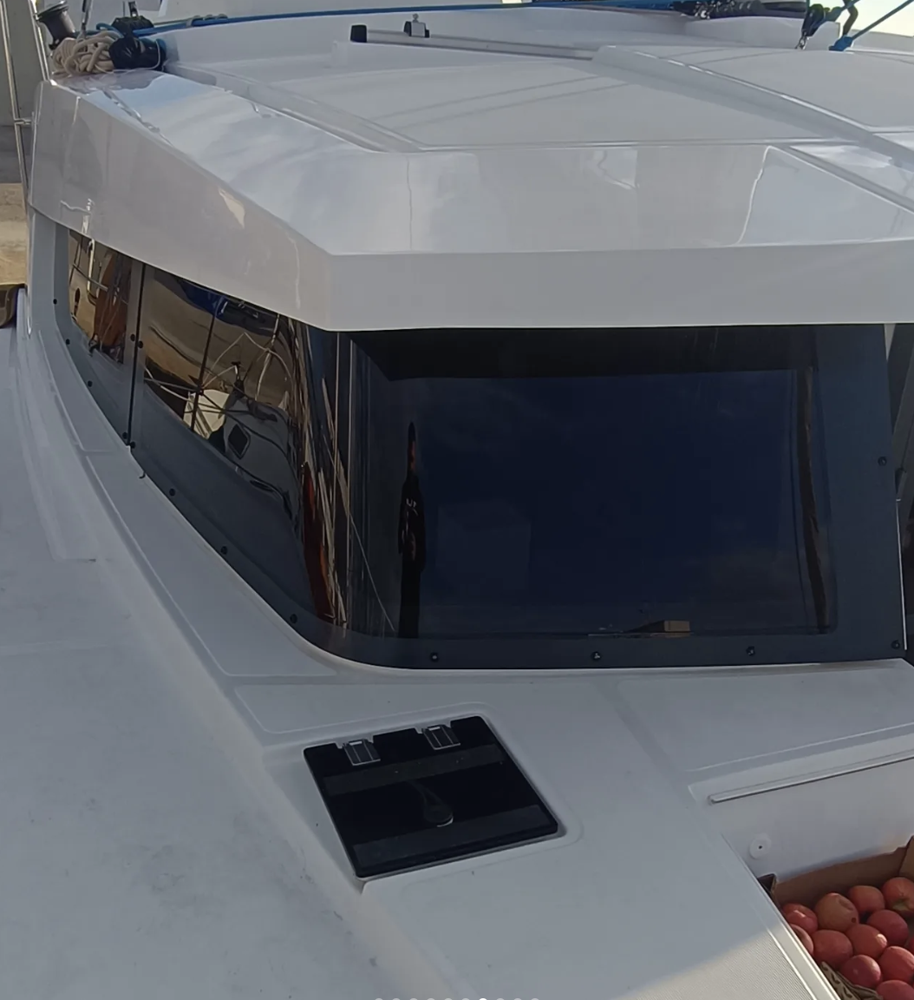
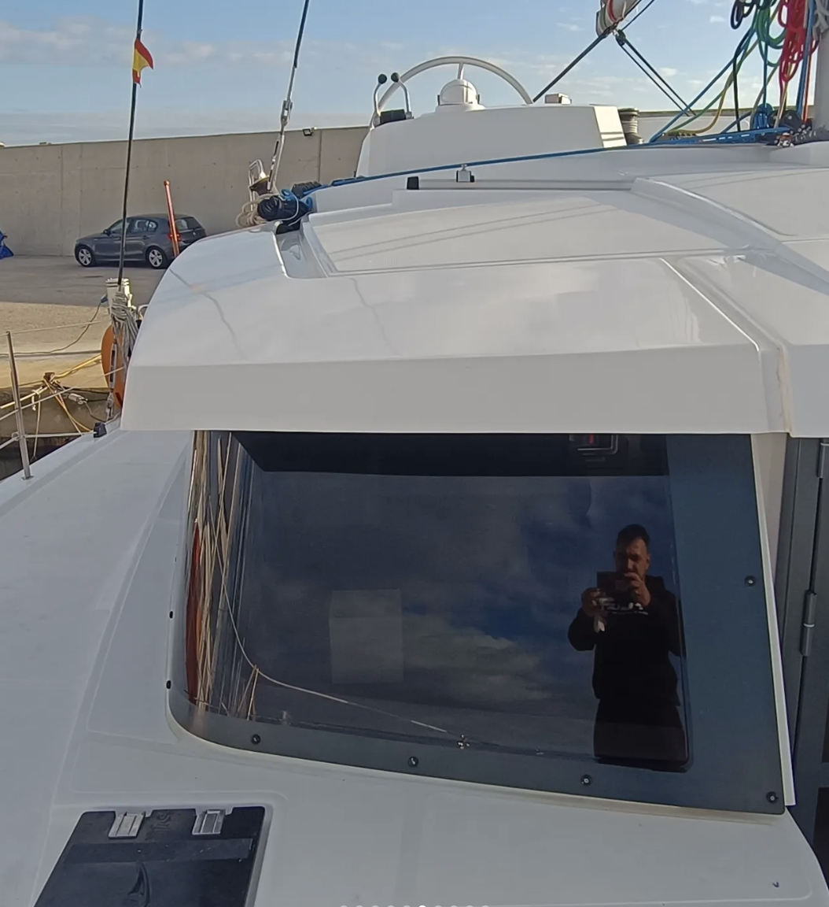
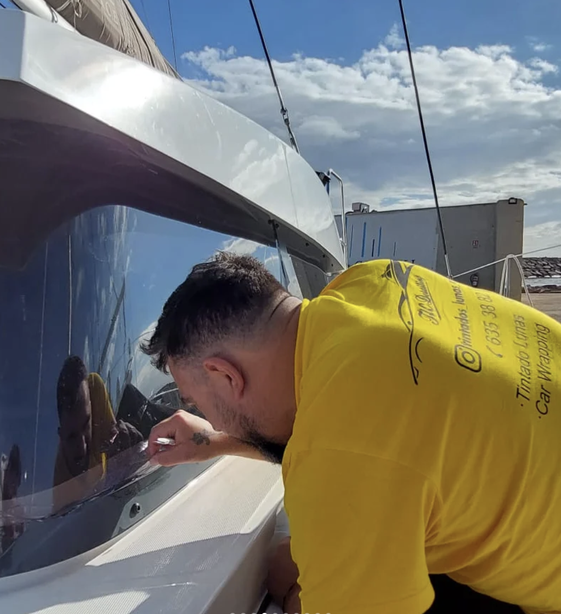
El tintado de lunas consiste en la aplicación de láminas solares sobre los cristales de la embarcación para mejorar la estética, aumentar la privacidad y proteger el interior de la embarcación. En TLC trabajamos con láminas nano cerámicas de alta gama, diseñadas para ofrecer una máxima protección frente a los rayos UV/UVA y un alto rechazo del calor IRR, ayudando a mantener el interior más fresco y confortable. Además, nuestras láminas no interfieren con señales electrónicas y están homologadas para ITV. Cada instalación incluye su certificado oficial, garantizando cumplimiento legal, seguridad y un acabado premium.
El vinilado consiste en la aplicación de láminas plásticas adhesivas sobre la superficie de la embarcación, permitiendo cambiar completamente su color o añadir diseños personalizados sin alterar la pintura original. En TLC trabajamos con materiales de alta calidad con distintas acabados: brillo, mate, satinado, texturizados y efectos especiales como metalizados, camaleónicos o fibra de carbono. Nuestras láminas ofrecen protección frente a arañazos, piedras, salitre y radiación UV, además de ser removibles para poder volver al color original o cambiar de estilo cuando lo desees.
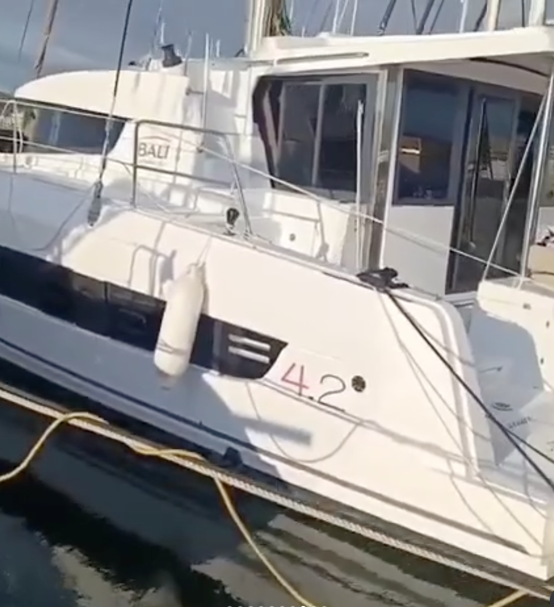
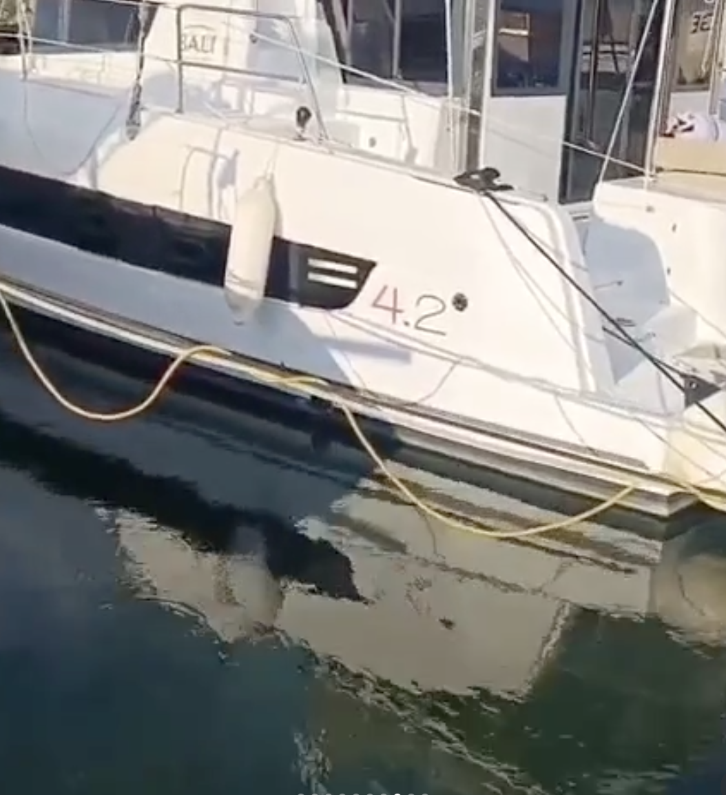
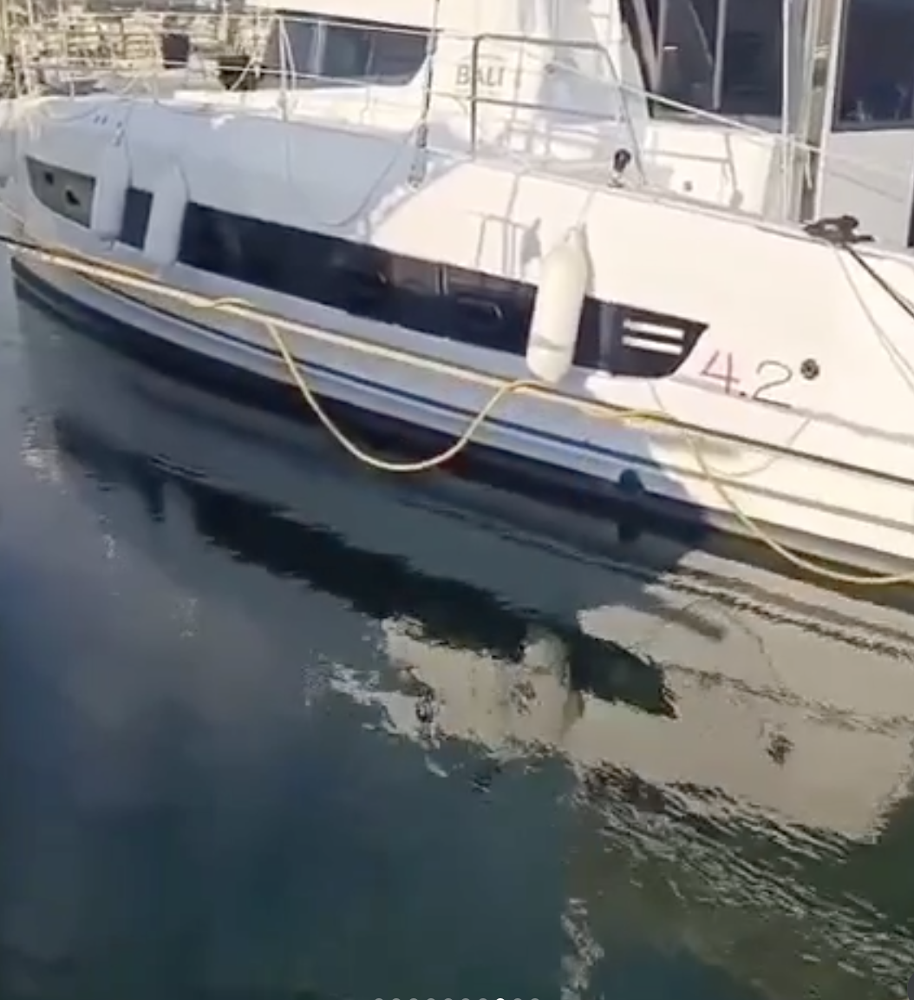
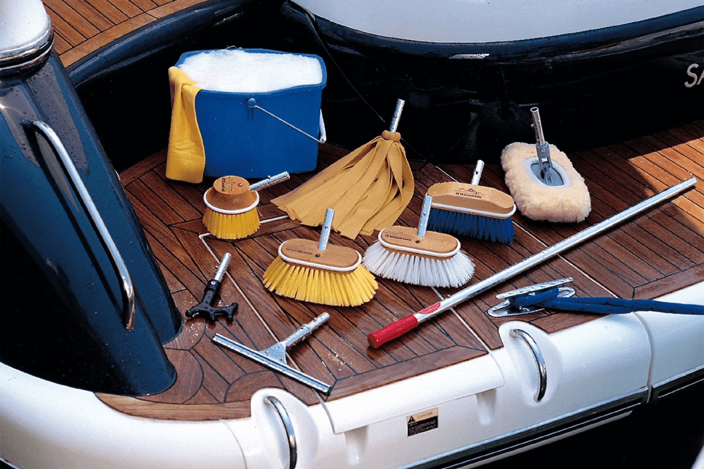
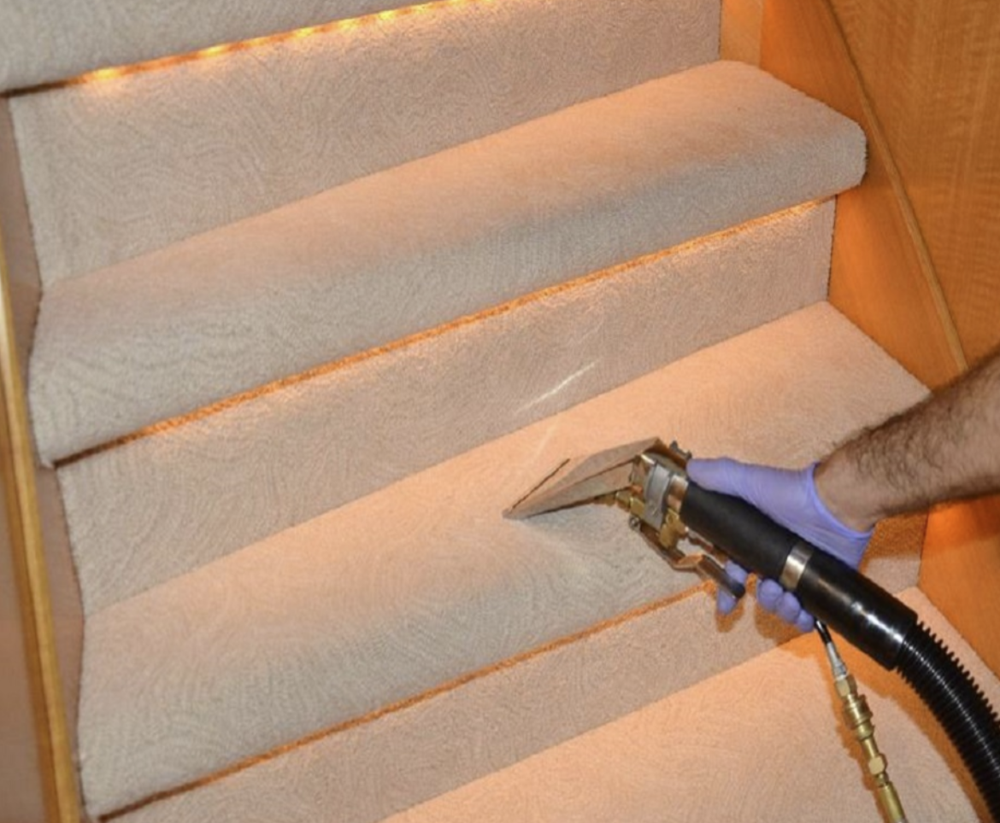
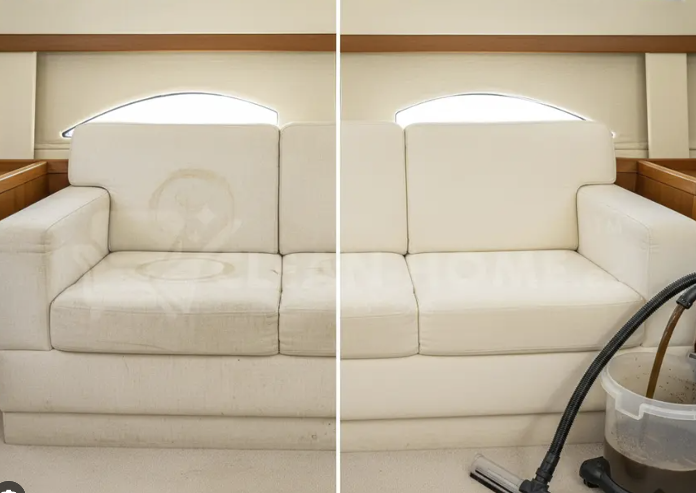
Realizamos limpiezas integrales de interiores, eliminando suciedad, ácaros, bacterias y manchas de tapicerías, alfombras, plásticos y otras superficies. Aplicamos tratamientos higienizantes y desinfectantes que eliminan olores y previenen la aparición de moho y bacterias, creando ambientes más sanos y confortables en embarcaciones.
En TLC Detailing, ofrecemos servicios de diseño de vinilo personalizado para que su embarcación sea realmente único. Nuestros talentosos diseñadores trabajan con usted para crear gráficos únicos, logotipos y envolturas que reflejen su estilo personal o la marca de su negocio. Utilizando vinilo de alta calidad y una aplicación precisa, nos aseguramos de que su diseño se vea nítido y dure mucho tiempo.
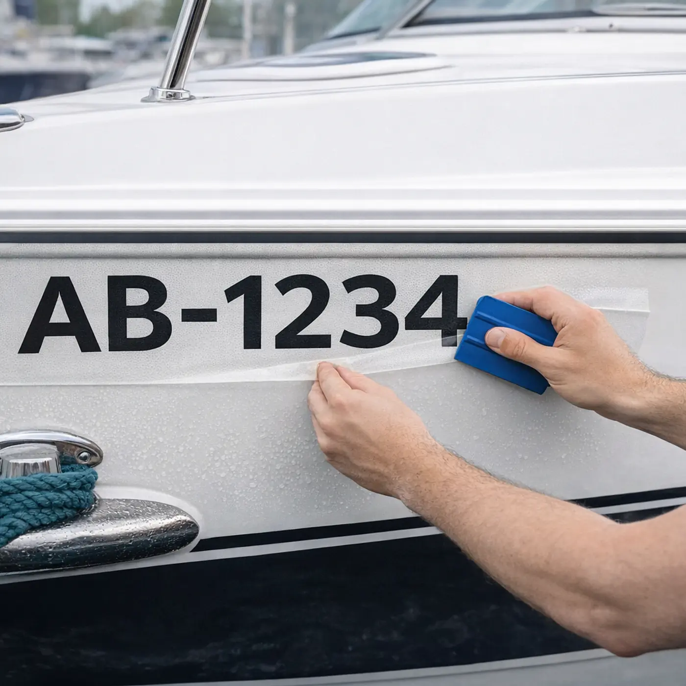
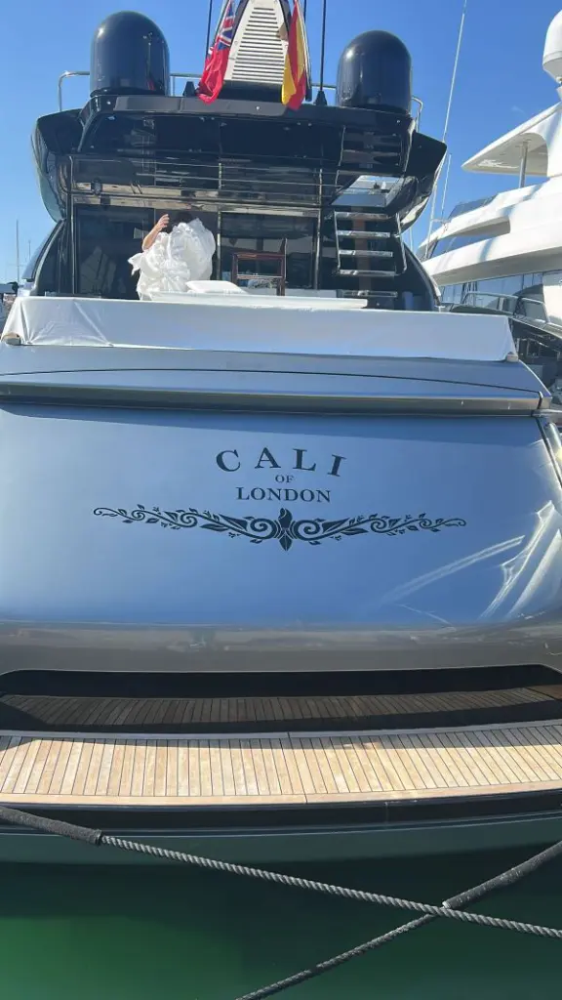
¡Hicieron un trabajo increíble tintando mis ventanas! El equipo era profesional, y mi coche se ve fantástico. ¡Recomiendo encarecidamente sus servicios!
El vinilo de mi coche tiene un aspecto increíble, ¡gracias al equipo de Cerdanyola! La calidad es de primera, y el personal fue super servicial durante todo el proceso.
El servicio de limpieza interior de Cerdanyola es excepcional. Mi coche parece y huele a nuevo. La atención al detalle fue impresionante, y el personal increíblemente amable.
Experimente lo mejor en cuidado náutico. Desde tintado de alta calidad y vinilos personalizados hasta limpieza profesional, le tenemos cubierto. No esperes más y dale a tu embarcación la atención que se merece.
PIDE TU CITA